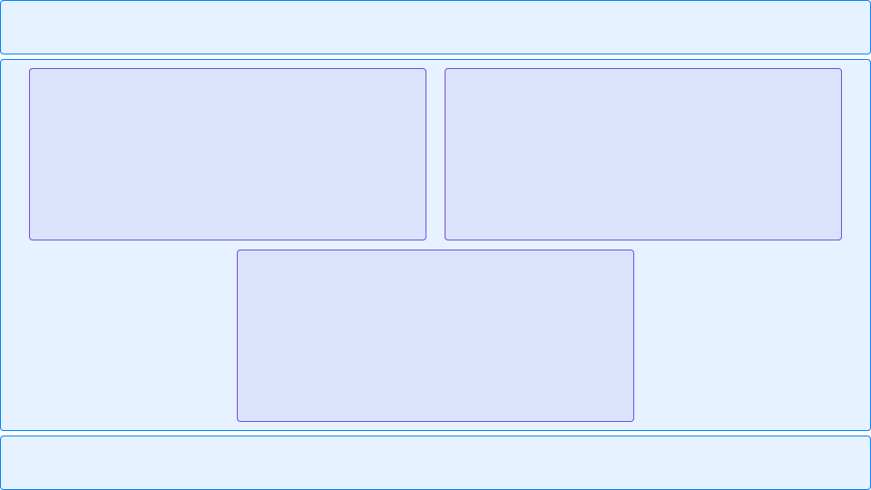

Page grids and document flow
A lecture at the HTML Academy about page grids
A grid or layout usually refers to the structure of the relative arrangement of large visual blocks on a page.
Imagine that the layout is mentally divided into non-intersecting rectangles.
First, the largest areas are highlighted, then these areas are divided into smaller ones, and so on until the smallest rectangles that represent individual words or elements are highlighted.
As a result, the entire page will look like a set of nested rectangles, starting from the largest and ending with the smallest.

In fact, the layout of the website grid implies organizing the order and location of these rectangles relative to each other and the screen borders. There are several methods in CSS for creating such grids, each with its own advantages and disadvantages.
Before you start building grids, you need to understand the concept of document flow.
Document flow
The document flow defines how elements are displayed on a web page and how this display order relates to the HTML code.

Displaying this code on the page:

All the elements are arranged in the same order in which they are present in the code.
In the document flow, tags interact with each other, and each subsequent tag takes into account the previous one (but not vice versa). The tags repel each other. If the element above is increased in height, it will displace all the underlying elements.
The flow is controlled using various CSS properties that allow you to resize elements or even change the flow direction.
Let’s consider another flow option for the same markup. The flow goes from top to bottom as usual, then “turns” from left to right, and goes down again:

The same code elements, but in a different view with 3 columns:

Although the HTML source code has not changed, three different stream variants have been created.
Flow control
Two groups of CSS properties are available for flow control.
Although the division is conditional, we can say that the first group changes the behavior of the elements in the stream, and the second group of properties regulates the size of the elements themselves.
The first group includes the display and float properties.
The second group includes the properties width, height, margin, padding, border and
box-sizing.